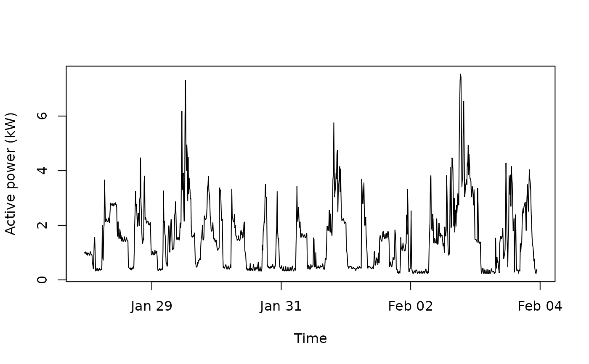

A data set containing measurements of the electric power consumption of one household with a time resolution of 10 minutes for the full year 2008.
Format
A data frame with 52704 rows and 15 variables:
- month
month of 2008
- month_day
day of the month
- hour
hour (0 to 23)
- minute
starting minute of the 10 minute period of this row
- active_power
global average active power over the 10 minute period (in kilowatt)
- reactive_power
global average reactive power over the 10 minute period (in kilowatt)
- voltage
average voltage over the 10 minute period (in volt)
- intensity
global average current intensity over the 10 minute period (in ampere)
- sub_metering_1
energy sub-metering No. 1 (in watt-hour of active energy averaged over the 10 minute period). It corresponds to the kitchen, containing mainly a dishwasher, an oven and a microwave (hot plates are not electric but gas powered).
- sub_metering_2
energy sub-metering No. 2 (in watt-hour of active energy averaged over the 10 minute period). It corresponds to the laundry room, containing a washing-machine, a tumble-drier, a refrigerator and a light.
- sub_metering_3
energy sub-metering No. 3 (in watt-hour of active energy averaged over the 10 minute period). It corresponds to an electric water-heater and an air-conditioner.
- week
week of the year, from 1 to 53 (week 1 consists of the first seven days of the year, week 2 of the next seven days, etc.)
- week_day
day of the week from 1 = Sunday to 7 = Saturday
- year_day
day of the year from 1 to 366 (2008 is a leap year)
- date_time
date and time in POSIXct format
Source
Individual household electric power consumption, 2012, G. Hebrail and A. Berard, UC Irvine Machine Learning repository. doi:10.24432/C58K54
Details
This is a simplified version of the full data available on the UCI Machine Learning Repository under a Creative Commons Attribution 4.0 International (CC BY 4.0) licence, and provided by Georges Hebrail and Alice Berard.
The original data (one measurement per minute) have been averaged over 10
minute periods (discarding missing data in each period). The measurements of
a period in which all the original data are missing are coded as NA. The
data set contains only the measurements from year 2008.
Notice that the variables are expressed in different units. In particular, the sub-meters measure active energy (in watt-hour) while the global active power is expressed in kilowatt.
Examples
## active power during the fifth week of 2008
pc <- powerconsumption[powerconsumption$week == 5, ]
summary(pc$active_power)
#> Min. 1st Qu. Median Mean 3rd Qu. Max.
#> 0.2258 0.4579 1.3436 1.5018 2.1260 7.5364
plot(pc$date_time, pc$active_power,
type = "l", xlab = "Time", ylab = "Active power (kW)"
)

## discretisation into four levels using the quartiles
power_dts <- dts(cut(pc$active_power,
breaks = c(0, quantile(pc$active_power, probs = c(0.25, 0.5, 0.75, 1)))
))
power_dts
#> Discrete time series of length 1008 with state space (0,0.458], (0.458,1.34], (1.34,2.13], (2.13,7.54]
#> (0.458,1.34] (0.458,1.34] (0.458,1.34] (0.458,1.34] (0.458,1.34] ...
model <- vlmc(power_dts)
draw(model)
#> ▪ (0.25, 0.25, 0.25, 0.25)
#> ├─ (0,0.458] (0.7968, 0.1912, 0.007968, 0.003984)
#> │ └─ (0,0.458] (0.809, 0.1809, 0.005025, 0.005025)
#> │ └─ (0,0.458] (0.8188, 0.1688, 0.00625, 0.00625)
#> │ └─ (0,0.458] (0.8462, 0.1385, 0.007692, 0.007692)
#> │ └─ (0.458,1.34] (0.55, 0.4, 0, 0.05)
#> ├─ (0.458,1.34] (0.1984, 0.6667, 0.1071, 0.02778)
#> │ ├─ (0,0.458] (0.375, 0.4167, 0.1458, 0.0625)
#> │ │ └─ (0,0.458] (0.3611, 0.4444, 0.1389, 0.05556)
#> │ │ └─ (0.458,1.34] (0, 0.8889, 0.1111, 0)
#> │ └─ (0.458,1.34] (0.1369, 0.75, 0.09524, 0.01786)
#> │ └─ (0,0.458] (0.4, 0.55, 0.05, 0)
#> ├─ (1.34,2.13] (0.003968, 0.123, 0.7262, 0.1468)
#> │ └─ (2.13,7.54] (0, 0.2, 0.525, 0.275)
#> └─ (2.13,7.54] (0.003968, 0.01587, 0.1587, 0.8214)
#> └─ (0.458,1.34] (0, 0.1429, 0.5714, 0.2857)